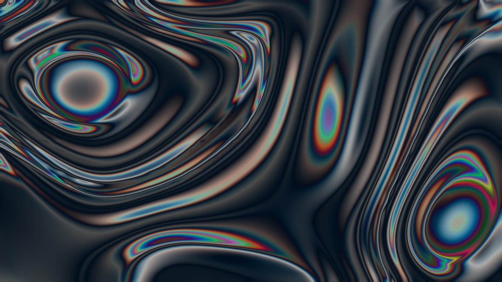

I’m an IT apprentice and I’m very interested in websites, CSS art, and graphics. My tech stack so far includes: Java, a bit of C#, JavaScript, TypeScript, Svelte, Next.js, TailwindCSS, as well as Octave and MATLAB.
In my free time, I make music under the name wahwahMusik.